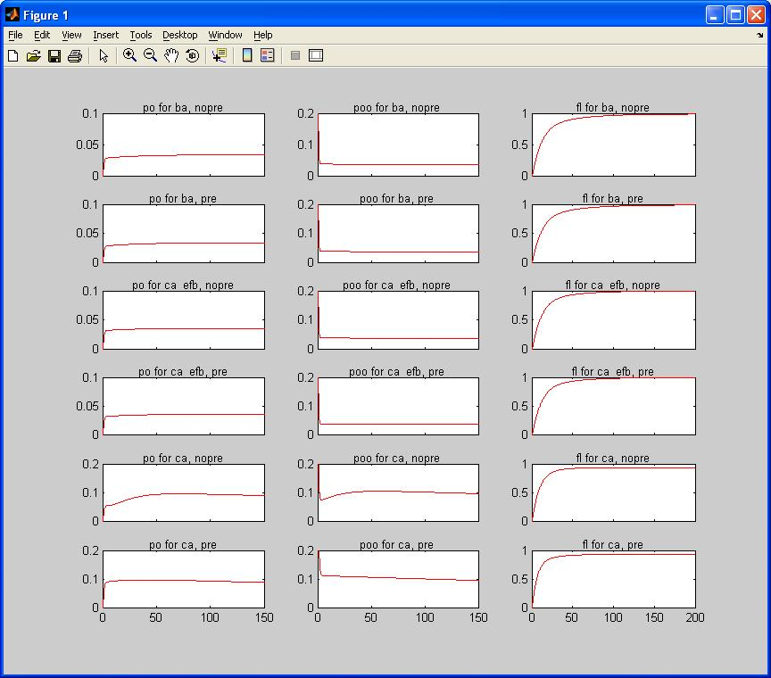

This code reproduces the model published in Figure 8 of:
Chaudhuri, D., Issa, J.B., and Yue, D.T. (2007). “Elementary
Mechanisms Producing Facilitation of Cav2.1 (P/Q-type) Channels,”
J. Gen. Physiology 129, 385-401.
The model is run in Matlab. Run sc_gui.m to open the GUI from which
you can enter model parameter values and simulate results. The other
two m-files, setup_sc.m and camodel.m, are used to do the
simulations. Euler integration is used to solve the differential
equations numerically.
The model involves 2 different groups of states (i.e., modes):
non-facilitated and facilitated. In each mode, the channel has 4
closed states and one open state. Transition to the facilitated mode
requires the influx of Ca++ and the channel type must be the EFa
splice variant. The probability of transitioning to the facilitated
state is governed by the channel open probability and the rate
constants alpha and beta (a large alpha and slow beta would give a
fast transition into the facilitated mode). The model also includes
inactivation, which can occur from the open state of either mode.
The other text files contained are used to set the time axis for each
of the different measures.
Abbreviations:
po = channel open probability
poo = channel open probability with a delay t following a known first
opening transition
fl = first latency distribution (probability that first opening
occurred before time t)
ot = mean open time for a single channel opening
C2 fraction = fraction of channels that start in the 2nd closed state
for Ca++ as the charge carrier
hi po fraction = fraction of channels that start in the facilitated
state for EFa Ca++ with no prepulse
Ba C2 fraction = fraction of channels that start in the 2nd closed
state for Ba++ as the charge carrier
Correction factors are used to scale the results to our data. These
values correct for blank sweeps in the data. They would all have a
value of 1 if there were no blank sweeps.
----
Running the model (in matlab command window type
run './sc_gui'
after cd'ing to the directory the files expanded into) (just press
the run button) should produce a graph similar to:

and the parameters in the GUI can be adjusted to produce graphs
similar to figs 3-6, 8.